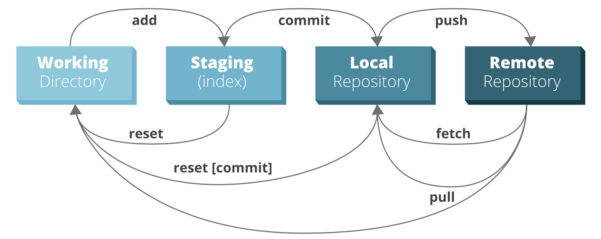

Overview
Differences

Snapshots

This is how Git works!
Git Features
- Nearly Every Operation is Local
- Git Has Integrity
- Git Generally Only Adds Data
The Three States

Git Configurations
Your identity
$ git config --global user.name "Amin Solhizadeh" $ git config --global user.email a.solhizadeh@parspooyesh.com
Your editor
$ git config --global core.editor emacs
Getting Started with Git
Git command line
Repositories
Creating your own repository
$ cd /home/amin/my-repo $ git init
Cloning an existing repository
$ git clone http://a.solhizadeh@bitbucket.parspooyesh.com/scm/ibsng/ibsng.git
File States
- Untracked
- Tracked
- Unmodified
- Modified
- Staged

File States (Cont.)
Untracked: A file you didn't have in your previous snapshot
$ echo "I am learning Git!" > README $ git status
Track new file (Also stages modified files)
$ git add README $ git status
Commit your changes
$ git commit
All in ONE
$ git commit -a -m 'My Initial Commit'
See the Changes
What is in your working directory but not in your staging area
$ git diff
What is in your staging area but not in your last commit
$ git diff --staged
Undo
Unstaging a staged file
$ git reset HEAD README
Unmodifying a modified file
$ git checkout -- README
Git Remotes
Working with remote repositories
Not Local Repository == Remote Repository

Git Remote Commands
Showing your remotes
$ git remote -v
Adding remote repositories
$ git remote add amin-repo http://a.solhizadeh@bitbucket.parspooyesh.com/scm/~a.solhizadeh/ibsng.git
Fetching and pulling your remotes
$ git fetch amin-repo $ git pull amin-repo
Pushing your remotes
$ git push amin-repo master
Git Branches
Working with branches
Add Branch
Create new branch
$ git branch testing

Switch Branch
Switch to new branch
$ git checkout testing

Shortcut (add and switch to new branch)
$ git checkout -b testing
Commit on Branch
Commit on new branch
$ echo "made changes!" >> "README" $ git commit -a -m "Made a Change"

Commit on Branch (Cont.)
Commit on base branch
$ git checkout master $ echo "made changes again!" >> "README" $ git commit -a -m "Also Made a Change"

Merge
Suppose we have following repository

Merge (Cont.)
We want to merge 'iss53' into 'master'

Merge (Cont.)
Merge branch 'iss53' into 'master'
$ git checkout master $ git merge iss53 $ git branch -d iss53

Merge in Real World
Suppose we have following scenario

Merge in Real World (Cont.)
We want to drop 'iss91' but keep the other two

Rebase vs Merge
Suppose we have following scenario

Rebase vs Merge (Cont.)
If we merge 'experiment' into 'master'
$ git checkout master $ git merge experiment

Rebase vs Merge (Cont.)
What if we rebase 'experiment' against 'master'
$ git checkout experiment $ git rebase master

Rebase vs Merge (Cont.)
Rebasing makes our merging more cleaner!
$ git checkout master $ git merge experiment

Contributing to a Project
Clone and Start Working
Clone main project
$ git clone$ cd project
Create a feature branch and start working
$ git checkout -b featureA (work) $ git commit (work) $ git commit
Put Your Work on Your Own Fork
Add your own fork and push your feature to it
$ git remote add myfork$ git push myfork featureA
Add another feature
$ git checkout -b featureB origin/master (work) $ git commit $ git push myfork featureB
What State Do We Are In!
Get the latest changes on main project
$ git fetch origin

Sending Pull Request
Rebase 'featureA' and then send pull request
$ git checkout featureA $ git rebase origin/master $ git push -f myfork featureA (send pull request)

Thank You